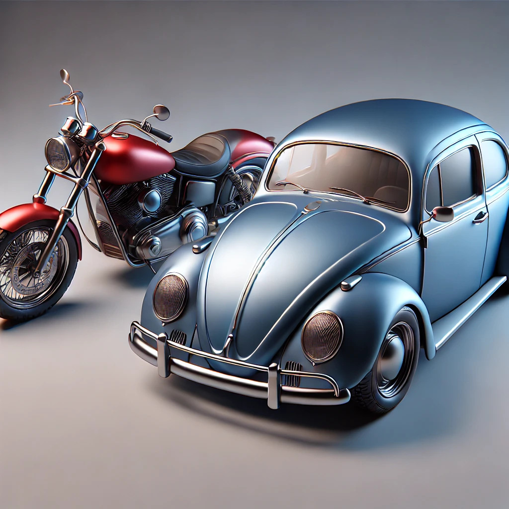

3 O projeto Sol-Terra-Lua
Neste capítulo, aprenderemos o uso básico do A-Frame por meio do desenvolvimento de um projeto para ensino de Astronomia.
No projeto Sol-Terra-Lua (abrev. STL) iremos:
- Criar as esferas solar, terrestre e lunar no espaço tridimensional em realidade aumentada.
- Texturizar a superfície das esferas com os mapas dos respectivos astros.
- Estabelecer os tamanhos e posições dos astros de forma pertinente aos objetivos didáticos de uma atividade educacional.
- Implementar o movimento de rotação de cada astro em torno do próprio eixo.
- Definir o plano orbital da Terra e da Lua.
- Implementar o movimento orbital da Terra e da Lua.
- Dar interatividade aos objetos celestes.
3.1 Elementos HTML do A-Frame
Todo o desenvolvimento do projeto será realizado no Glitch.
- Faça o login na sua conta do Glitch e remixe o projeto aframe-minicurso-vr
Repare que o projeto está bastante vazio, com apenas o arquivo index.html e sem qualquer código Javascript explícito. Entretanto, temos dentro do head a inclusão do arquivo online:
https://aframe.io/releases/1.6.0/aframe.min.js.
É esse arquivo, acessado remotamente, que disponibilizará o núcleo de funcionalidades do A-Frame.
O elemento HTML básico e obrigatório do A-Frame é o
<a-scene>(Cena), o qual temos que incluir dentro do elemento<body>:<body> <a-scene> </a-scene> </body>
Dentro do <a-scene> todos os elementos espaciais do projeto serão incluídos. Esses elementos recebem o nome de <a-entity> (Entidades). Cada entidade, por sua vez, terá uma série de propriedades, chamadas de components (Componentes). Por fim, cada componente terá atributos que definirão as aparências e funcionalidades da entidade.
Esse tipo de estruturação segue o modelo ECS (Entity-Component-System) que é alternativo ao modelo de classes e objetos. Ele se opõe ao sistema de hierarquização da programação orientada a objetos ao permitir maior modularização e inter-operacionalização dos componentes que podem ser aplicados diretamente em diferentes entidades.
De forma abstrata, uma estrutura ECS no A-Frame poderia ser algo assim:
Cena:
Entidade 1:
- Componente A -> Atributo A1: valor E1A1; Atributo A2: valor E1A2
- Componente B -> Atributo B1: valor E1B1; Atributo B2: valor E1B2
Entidade 2:
- Componente A -> Atributo A1: valor E2A1; Atributo A2: valor E2A2
- Componente C -> Atributo C1: valor E2C1; Atributo C2: valor E2C2
Um exemplo mais concreto seria:
a-scene:
a-entity
id = "carro":rodas = "quantidade : 4; aro: 20"material = "cor: azul; metalicidade: 0.5"
a-entity
id = "moto":rodas = "quantidade : 2; aro: 40"material = "cor: vermelho; metalicidade: 0.8"

Nesse exemplo, carro e moto são entidades distintas, mas rodas e material são componentes que podem ser compartilhados pelas diferentes entidades. Esses componentes irão se diferenciar por possuírem valores diferentes para os seus atributos (e.g. rodas com quantidade : 2 ou quantidade : 4) e por estarem atrelados a diferentes entidades. Uma das vantages dessa abordagem ECS é que eu preciso programar o componente rodas somente uma vez e ele pode ser usado em diferentes veículos.
Entidades podem ser aninhadas. Por exemplo, ao invés de tratar as rodas como sendo componentes, poderíamos considerar mais apropriado implementá-las na forma de uma entidade:
a-scene:
a-entity
id = "fusca":a-entity
id = "rodas_do_fusca":material = "cor: preto; metalicidade: 0.1"dimensoes = "aro: 20; largura: 10; quantidade: 4"
a-entity
id = "moto":rodas = "quantidade : 2; aro: 40"material = "cor: vermelho; metalicidade: 0.8"
Vamos então criar nossa primeira entidade: o planeta Terra.
Coloque a entidade abaixo dentro do elemento a-scene:
<a-entity id="terra" geometry="primitive: sphere" material="color: blue"> </a-entity>
Se fizermos o preview lateral para tentarmos observar o resultado, provavelmente não veremos nada. Isso ocorre, pois não estamos usando os óculos de realidade virtual. A melhor forma de interagir com a página gerada na tela do computador é escolhendo a opção Preview in a new window. Na página que foi aberta, devemos entrar no modo de inspeção (Visual inspector) ao digitar a combinação de teclas <ctrl> + <alt> + i ou <ctrl> + <option> + i.
Cada botão do mouse quando mantido apertado permite rotacionar, transladar e aproximar/afastar a visão da cena. Ao clicar em uma entidade é possível também aferir e alterar os valores dos seus atributos. É possível até mesmo criar entidades novas e atribuir componentes no Visual inspector.
Voltando à Terra, vamos “dar um talento” em nosso pale blue dot.1 Para isso, usaremos uma imagem planificada da superfície da Terra para projetá-la na esfera. Por sorte, o A-Frame faz isso muito diretamente para a gente. Vejamos como.
3.2 Carregando arquivos externos em nosso projeto STL
O A-Frame possui um elemento chamado <a-asset> para pré-carregar todos os recursos (imagens, áudios, vídeos, etc) que sejam usados na página. Existem duas formas para fazer isso:
- Carregando o recurso dentro do Glitch via Files no menu lateral de arquivos.
- Indicando o endereço de internet (URL) do recurso caso ele esteja disponível.
No momento, vamos usar a segunda opção.
- Clique com o botão direito do mouse sobre o mapa da Terra abaixo e copie o seu link.
{kind=link}
Dentro do
<a-scene>inclua o elemento:<a-assets> <img id="mapa_terra" src="substitua_isto_pelo_endereço_da_imagem"> </a-assets>Em seguida substitua o atributo color por src no componente material da entidade
terra, usando como valor aiddo mapa da Terra:<a-entity id="terra" geometry="primitive: sphere" 1 material="src: #mapa_terra"> </a-entity>- 1
-
Atributo
srcno lugar decolor.
3.3 Animando as coisas
Como já dizia o sábio Galileu, “Eppur si muove”.2 Vamos então pôr o mundo a girar.
O A-Frame possui várias possibilidades de animação built in através do componente animation. Os atributos principais desse componente são:
property: a propriedade da entidade que será animada, e.g. ângulo de rotação, posição, grau de transparência, etc.from: o valor inicial da propriedade (default: o valor atual).to: o valor final da propriedade ao término da animação.dur: duração da animação em milissegundos.loop: se a animação deve ser reiniciada automaticamente apósdurms (tureoufalse).easing: a taxa de variação da propriedade (default: aumento quadrático = aceleração constante).
Comecemos implementando a razão dos nossos dias e noites: a rotação da Terra em torno do próprio eixo.
Para isso inclua o seguinte componente
animationna entidadeterra:<a-entity id="terra" geometry="primitive: sphere" material="src: #mapa_terra" 1 animation="property: rotation; to: 0 360 0; loop: true; dur: 10000, easing: linear"> </a-entity>- 1
-
Componente
animationpara rotação da Terra.
Recarregue a página de preview e entre no modo de inspeção (
<ctrl><alt>i). A Terra ainda estará parada. Isso ocorre pois devemos acionar o botão de play ▶ no canto superior esquerdo.
Assim, deveremos observar a Terra girando ad eternum (loop: true) com velocidade constante (easing: linear) e executando uma revolução a cada 10 segundos.
3.4 Sistemas de referência
Expressão cunhada pelo astrônomo e divulgador científico Carl Sagan ao descrever a imagem da Terra capturada pela sonda Voyager 1, a uma grande distância. No retrato, o planeta aparece como um minúsculo ponto azul. Sagan utilizou essa imagem para refletir sobre a humildade e a responsabilidade da humanidade em relação ao único lar conhecido.↩︎
A expressão em italiano que significa “E, no entanto, ela se move” teria sido dita por Galileu Galilei após ser forçado pela Inquisição a renegar sua defesa do heliocentrismo. Galileu teria murmurado a frase em desafio, reafirmando sua convicção, mesmo após a retratação oficial. Entretanto, não há evidências da vericidade dessa fala.↩︎